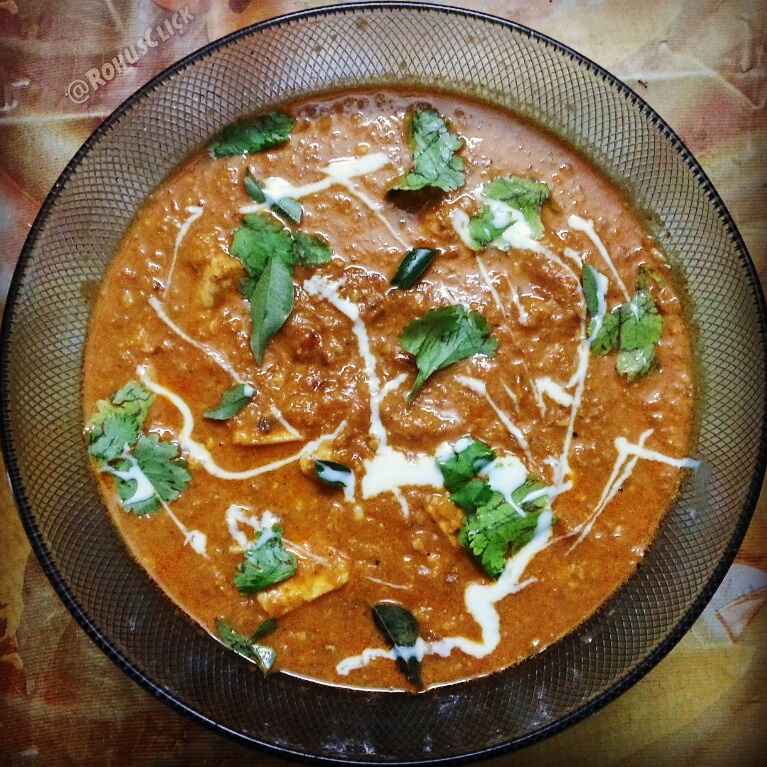

Home
Panner Butter Masala

Description
Paneer butter masala is a delicious rich and creamy vegetarian Indian curry. This recipe is easy to make at home
in just
30 minutes with cubes of paneer, onions, cashews, and Indian spices in a buttery tomato sauce.
Ingredients
- ½ cup vegetable oil
- ½ pound paneer, cut into ½-inch cubes
- 2 tablespoons butter
- 2 onions, finely chopped
- 1 teaspoon ginger paste
- 1 teaspoon garlic paste
- 1 tablespoon ground cashews
- 1 teaspoon ground red chiles
- ½ teaspoon ground cumin
- ½ teaspoon ground coriander
- ½ teaspoon garam masala
- 1 (8 ounce) can tomato sauce
- ½ cup half-and-half
- ½ cup milk
- ½ teaspoon white sugar
- ½ teaspoon salt
Steps
- Gather all ingredients.
- Heat oil in a large skillet over medium heat; fry paneer in batches until golden, about 5 minutes.
- Transfer fried paneer to a paper towel-lined plate to drain, retaining vegetable oil in skillet.
- Melt butter in the same skillet over medium heat; cook and stir onion until golden brown, about 10 minutes.
- Add ginger paste and garlic paste. Continue to cook until fragrant, about 1 minute more.
- Stir cashews, ground red chiles, cumin, coriander, and garam masala into the onion mixture. Cook and stir
for 1 minute.
- Stir tomato sauce, half-and-half, milk, sugar, and salt into spice mixture; simmer until thickened, about 5
minutes.
- Reduce heat to low. Add fried paneer and simmer until heated through, about 5 minutes more.